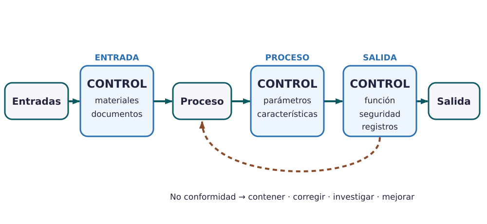

Contenido
Hoy conseguirás: dibujar cómo se fabrica vuestro producto y decidir qué se comprueba en cada momento, cómo y qué se hace si algo sale mal.
El proceso, contado con verbos
Un diagrama de fabricación no dice «fábrica». Dice qué se hace, en orden, con verbos: cortar, embutir, soldar, lavar, montar, probar, embalar…
El proceso de la botella
Cortar el tubo de acero → conformar los dos vasos (empujar el metal contra un molde) → laminar la rosca de la boca (marcarla apretando con rodillos) → soldar los dos vasos y el fondo → hacer el vacío entre las paredes en un horno y cerrar → pintar → moldear el tapón por inyección → montar la junta en el tapón → probar → embalar.
Las tres puertas de control
La calidad no se comprueba solo al final. Se controla en tres momentos:

Ampliar- Entrada: lo que llega de los proveedores (tubo de acero, plástico, juntas).
- Proceso: mientras se fabrica, en las operaciones que más fallan.
- Salida: el producto terminado, antes de embalarlo.
Las cinco preguntas de un control
Un control solo está bien definido si responde a cinco preguntas. «Comprobar la calidad» no responde a ninguna.
Controles de la botella
| Momento | Qué se mira | Cómo | Cuándo está bien | Cada cuánto | Qué se hace si falla |
|---|---|---|---|---|---|
| Entrada | Espesor de la pared del tubo de acero | Micrómetro (mide hasta 0,01 mm) | Entre 0,48 y 0,52 mm | 5 tubos de cada palé | Se aparta el palé y se avisa al proveedor |
| Proceso | Diámetro de la rosca de la boca | Calibre | Entre 51,80 y 52,20 mm | 1 botella de cada 50 | Se para la máquina y se revisan las botellas desde la última buena |
| Salida | Que no pierde agua | Llena de agua a 60 °C, cerrada y boca abajo 1 minuto sobre papel secante | Ninguna mancha | Todas | Se aparta, se cambia la junta y se vuelve a probar |
¿Todas o solo unas cuantas? Se prueban todas cuando un fallo sería grave para quien usa el producto (una botella que gotea en la mochila, un hervidor que da calambre). Si el fallo es leve, basta con una muestra: unas pocas de cada lote.
Cuando algo falla: arreglar la pieza o quitar la causa
Una botella pierde agua en la prueba de salida
Corrección: se cambia la junta de esa botella y se vuelve a probar. La botella queda bien… pero mañana fallará otra.
Acción correctiva: se descubre por qué falla (la junta se coloca torcida al montar el tapón) y se cambia el montaje para que no vuelva a pasar.
La calidad cuesta… y la falta de calidad cuesta más
| Tipo de coste | Qué es | Botella | Qué riesgo reduce o qué consecuencia tiene |
|---|---|---|---|
| Prevención | Lo que se gasta para que no haya fallos | Enseñar a montar bien la junta | Menos fugas |
| Evaluación | Lo que se gasta en comprobar | La prueba de agua de cada botella | Las fugas no llegan al cliente |
| Fallo interno | Un fallo que se descubre antes de vender | Cambiar la junta de una botella que pierde | Tiempo y juntas perdidas |
| Fallo externo | Un fallo que descubre el cliente | Devolver el dinero a un cliente con una botella que gotea | Dinero, mala opinión y clientes perdidos |
Palabras nuevas
- Control de calidad
- Comprobar una característica del producto en un momento del proceso y decidir qué se hace con el resultado.
- Lote
- Grupo de piezas fabricadas juntas, con el mismo material y la misma máquina. Las 500 botellas del turno de mañana.
- Muestra
- Unas pocas piezas de un lote que se comprueban en vez de todas.
- No conformidad
- Una pieza o un lote que no cumple lo exigido.
- Corrección / acción correctiva
- Corrección: arreglar lo que ha fallado. Acción correctiva: quitar la causa para que no vuelva a pasar.
- Dibujad el proceso de vuestro producto con verbos, a partir del expediente, y marcad dónde están los controles.
- Completad la tabla de controles: uno de entrada, uno de proceso y uno de salida, con las cinco preguntas.
- Completad la tabla de costes con un ejemplo de cada tipo en vuestro producto y qué riesgo reduce o qué consecuencia tiene.
Cómo sabéis que está bien
- ☐ El proceso usa verbos y sigue el orden real del expediente.
- ☐ Hay un control de entrada, uno de proceso y uno de salida.
- ☐ Cada control dice cuándo está bien con un número o una prueba clara.
- ☐ Cada control termina en qué se hace si falla.
Compruébalo
Arrastra cada ejemplo a su tipo de coste.